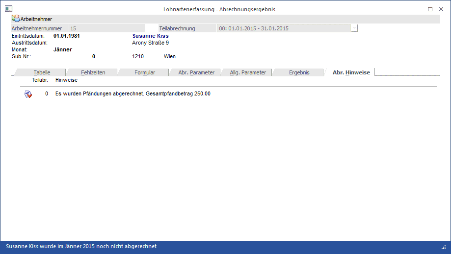

In diesem Register werden Hinweise zur aktuellen Abrechnung angezeigt. Sobald ein Abrechnungshinweis vorhanden ist, wird die Überschrift des Registers fett angezeigt und die Anzahl der Hinweise vermerkt.

Mögliche Abrechnungshinweise:
ü Abrechnung Ok, aber negatives Netto
ü Beitragsgrundlagengruppe, IE und DB wurde auf Grund des Alters umgestellt
ü Die Geringfügigkeitsgrenze wurde überschritten (wenn der AN entsprechend gekennzeichnet ist)
ü Zukunftssicherung wurde über Jahresgrenze abgerechnet
ü Höchstbemessungsgrundlage der Beitragsgruppe entspricht nicht dem aktuell gültigen Wert
ü Eintritt innerhalb der Periode
ü Austritt innerhalb der Periode
ü Der Abrechnungsbeginn liegt vor dem Eintrittsdatum
ü Das Abrechnungsende liegt nach dem Austrittsdatum
ü Hinweise auf Pfändungen
ü Die automatische J/6 Aufrollung wurde wegen eines J/6 Überhangs durchgeführt